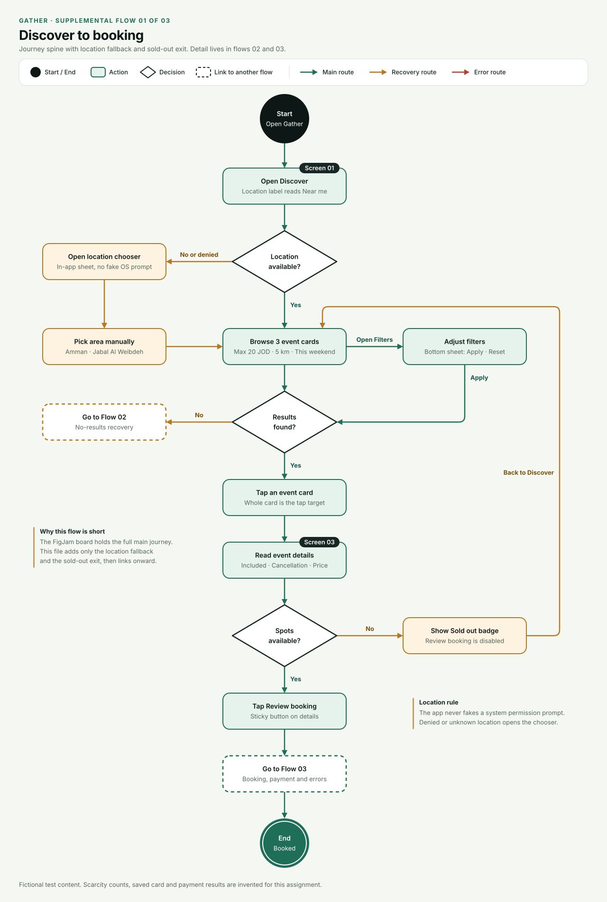
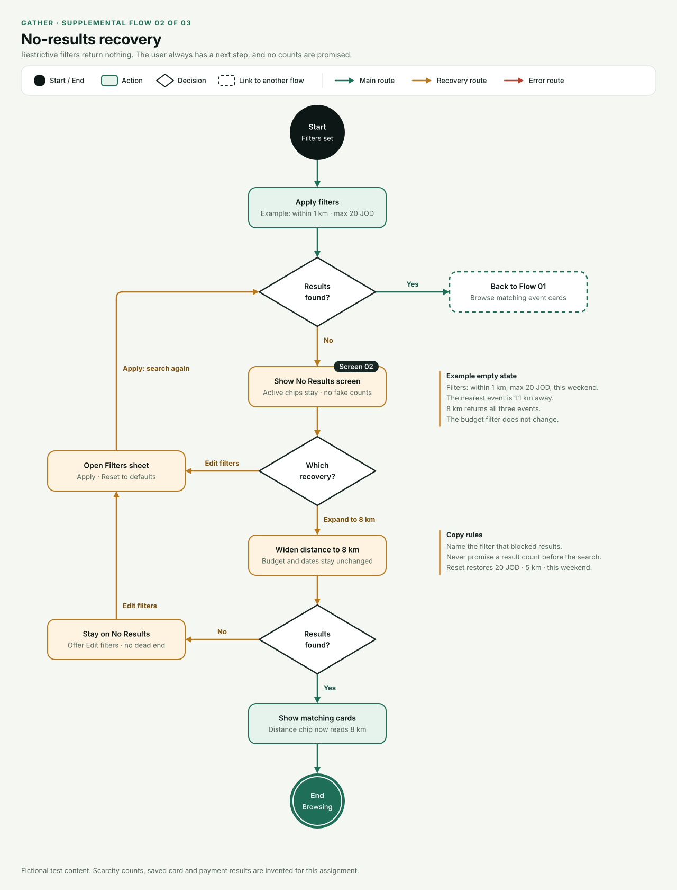
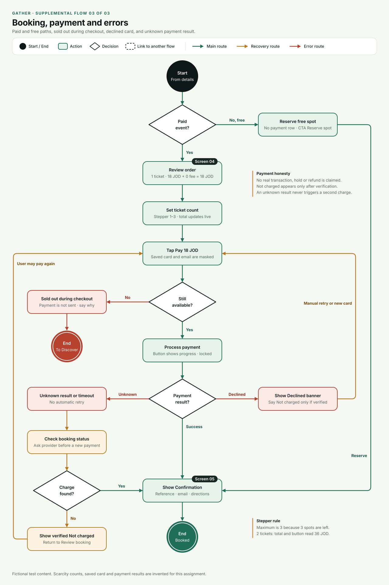

Gather · UX User Flows
Action rectangles • decision diamonds • start/end circles • color-coded recovery paths.
01 · Main journey
Editable SVG
02 · Filters & No Results
Editable SVG
03 · Booking & Payment Errors
Editable SVG